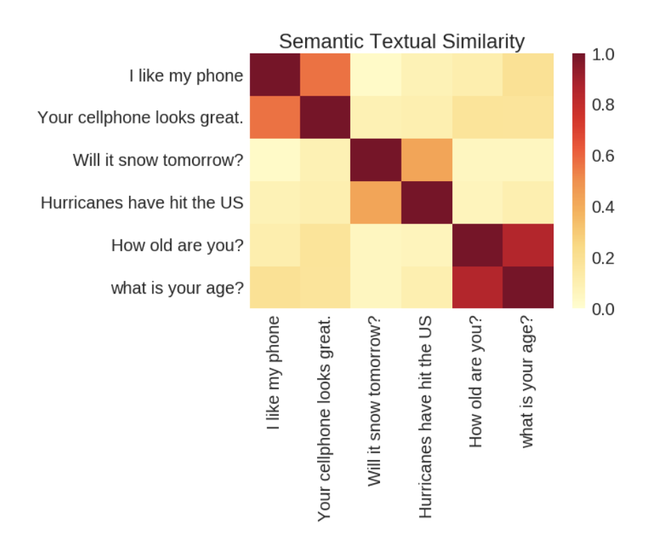
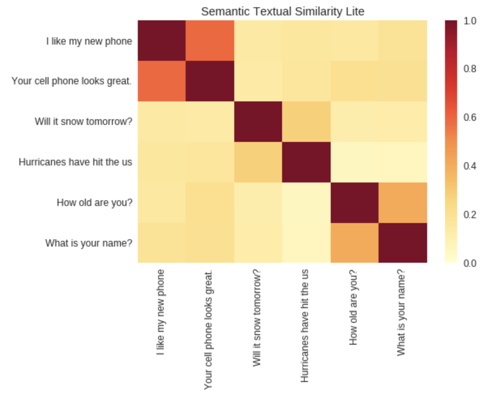

From the Universal Sentence Encoder paper


Difference between each value in the encodings of the two sentences L1 distance between sentences L2 distance between sentences cosine similarity angular distance (what the paper uses) hmm, not as good as the paper!